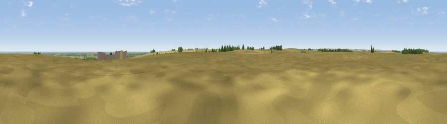

Viewpoint near Wold Newton
#21486 in England · top 24% of its area beats it · near Wold NewtonThe view, rendered

A 360° render of this exact spot computed from the terrain model, tree cover and land cover — summer colours, afternoon light, calibrated against photographs of famous viewpoints. Real trees, hedges and buildings will differ in detail.
The panorama
Grey silhouette: terrain skyline in each direction (720 bearings, Earth curvature and refraction included). Dashed green: skyline with trees (+15 m) and buildings (+8 m) as obstacles. Blue strip: how far the ground is visible on each bearing.
Where the view opens
Wedge length = distance to the farthest visible ground on that bearing (vegetation-aware). Rings at 10, 25 and 50 km.
What fills the view
88% cropland · 5% water · 4% grassland · 2% woodland ·
Angular shares of the visible panorama (visual magnitude), not map area. Landscape diversity 0.23 (0–1 Shannon).
Key numbers
More beautiful places nearby
The staircase of upgrades: each row has a higher view potential than everything closer. Driving times are estimates from straight-line distance, calibrated against real road routing — check an actual route before setting out.
| Place | Direction | Drive | Score |
|---|---|---|---|
| Viewpoint near Ludborough | SE · 2 km | ~5 min | 53.5 |
| Viewpoint near Wold Newton | NNW · 3 km | ~7 min | 57.3 |
| Viewpoint near Walesby | W · 13 km | ~23 min | 57.9 |
| Viewpoint near Claxby | W · 14 km | ~26 min | 61.7 |
| Viewpoint near Claxby | W · 14 km | ~26 min | 64.9 |
| Viewpoint near Claxby | W · 15 km | ~27 min | 71.5 |
| Garrowby Hill (A166 crest) | NW · 77 km | ~101 min | 71.9 |
| Viewpoint near Bempton | N · 80 km | ~104 min | 72.8 |
53.43239, -0.09785 · source: osm peak · position refined by local search. Computed location — check access rights before visiting.